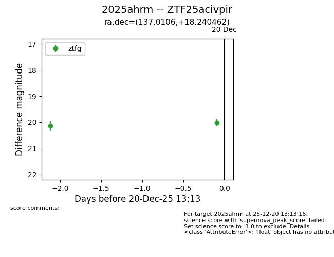
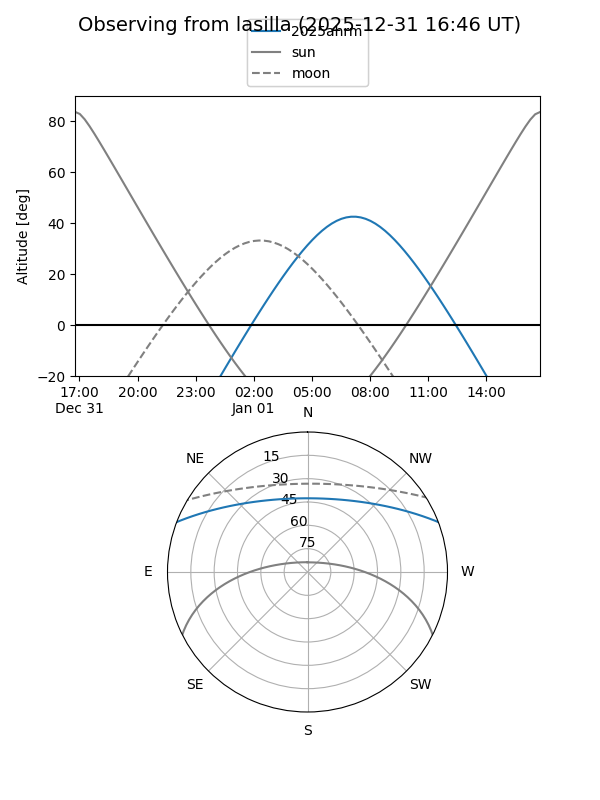
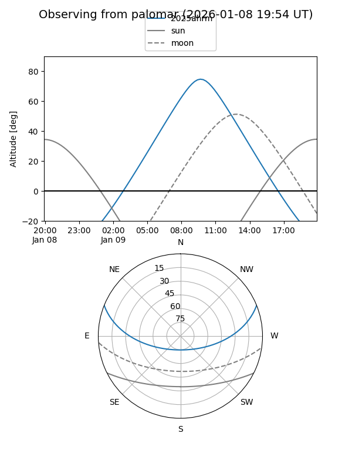

2025ahrm
Target 2025ahrm at 2026-01-09 12:49
Aliases and brokers:
FINK: link
Lasair: link
ALeRCE: link
TNS: link
YSE: link
alt names
ZTF25acivpir (ztf,fink_ztf)
2025ahrm (tns,yse)
Coordinates:
equatorial (ra, dec) = 137.0106,+18.24046
equatorial (HMS+DMS) = 09:08:02.54,+18:14:25.66
galactic (l, b) = (210.3491,+38.11481)
Flags:
Photometry:
last ztfg=20.12
3 ztfg detections
Lightcurve

Visibility


Additional plots